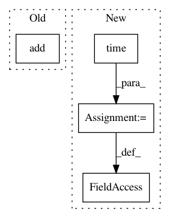

0f1c2a98960c6e3ba8d48e4f00ad358ccb204f07,reframe/core/schedulers/pbs.py,PbsJobScheduler,_poll_job,#PbsJobScheduler#Any#,165
Before Change
time_from_finish = (t_now - job_time_finished).total_seconds()
if time_from_finish > PBS_OUTPUT_WRITEBACK_WAIT:
self._finished.add(job)
def poll(self, *jobs):
for job in jobs:
self._poll_job(job)
After Change
done = job.cancelled or output_ready
if done:
t_now = time.time()
if job.completion_time is None:
job._completion_time = t_now
time_from_finish = t_now - job.completion_time
if time_from_finish > PBS_OUTPUT_WRITEBACK_WAIT:
job._completed = True
In pattern: SUPERPATTERN
Frequency: 3
Non-data size: 4
Instances
Project Name: eth-cscs/reframe
Commit Name: 0f1c2a98960c6e3ba8d48e4f00ad358ccb204f07
Time: 2020-09-15
Author: karakasis@cscs.ch
File Name: reframe/core/schedulers/pbs.py
Class Name: PbsJobScheduler
Method Name: _poll_job
Project Name: andresriancho/w3af
Commit Name: 93181da752075e7c89620a897153d4cec3c8e722
Time: 2018-06-25
Author: andres.riancho@gmail.com
File Name: w3af/core/data/url/handlers/keepalive/connection_manager.py
Class Name: ConnectionManager
Method Name: replace_connection
Project Name: andresriancho/w3af
Commit Name: 93181da752075e7c89620a897153d4cec3c8e722
Time: 2018-06-25
Author: andres.riancho@gmail.com
File Name: w3af/core/data/url/handlers/keepalive/connection_manager.py
Class Name: ConnectionManager
Method Name: get_available_connection